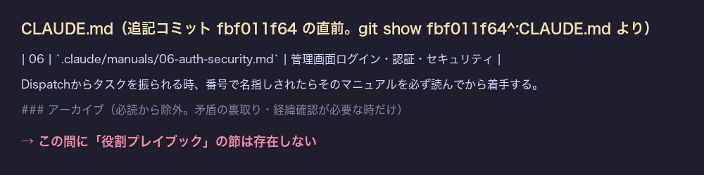
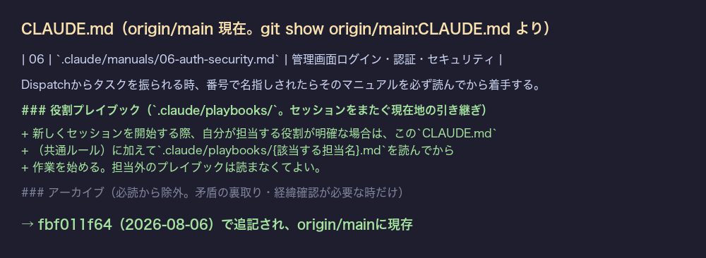

共有資料の一覧 ／ 確認ページ #34567 CLAUDE.mdのプレイブック読み込みルール追記（既に反映済みを実測・証拠を作り直し）
#34567 CLAUDE.mdのプレイブック読み込みルール追記（既に反映済みを実測・証拠を作り直し）
2026-10-21 実装・main合流・本番(GitHub Pages)反映まで実測確認
依頼：新しくセッションを開始する際、担当する役割が明確な場合は CLAUDE.md に加えて .claude/playbooks/{該当する担当名}.md を読んでから作業を始める、というルールを joy-relief-station の CLAUDE.md に追記する。実測結果：このルール文言は依頼が来た当日（2026-08-06）のコミット fbf011f64（役割ごとの現在地を引き継ぐ「担当別プレイブック」を新設）で既に CLAUDE.md へ追記済みで、2026-10-21時点の origin/main の最新コミットの祖先であることを git merge-base --is-ancestor で確認した。前回の確認ページは非公開リポへのGitHubリンクを貼っており本人が開くと404になったため、本ページでは本文に before/after の実データ画像を直接埋め込み、リンクは公開ページのみにした。
② 数字
1/1該当ルール文言：確認1件中1件が存在
fbf011f64追記コミットの先頭8桁（2026-08-06）
YESorigin/mainの祖先か（git merge-base --is-ancestor）
③ 実データでのスクリーンショット
追記前（fbf011f64の直前のCLAUDE.md）
追記後（origin/main現在のCLAUDE.md）
④ 押せるリンク
⑤ 何をどう確かめたか
| 確認項目 | 結果 |
|---|
| CLAUDE.mdに該当ルール文言が存在するか（origin/main） | 存在する（下の画像参照） |
| 追記コミットがorigin/mainの祖先か（git merge-base --is-ancestor） | YES |
| 追記日と依頼日の関係 | 追記コミット日2026-08-06＝依頼が来た当日 |
| 確認ページ内の非公開リポGitHubリンク | 0件（画像とこのページ自身のみで証明） |